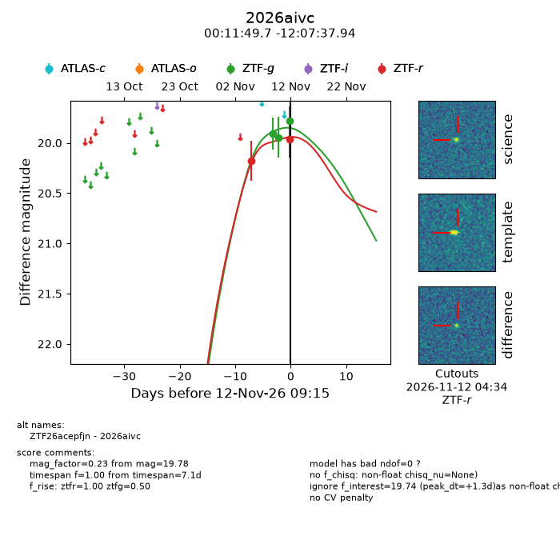
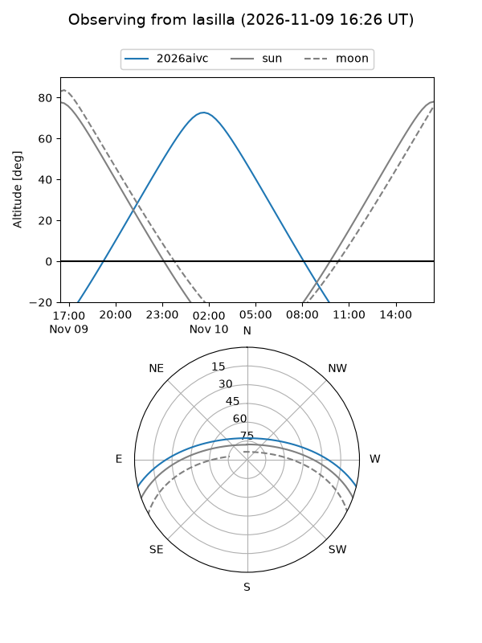
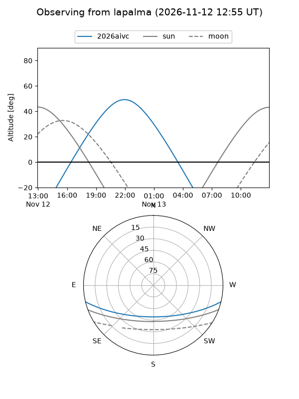
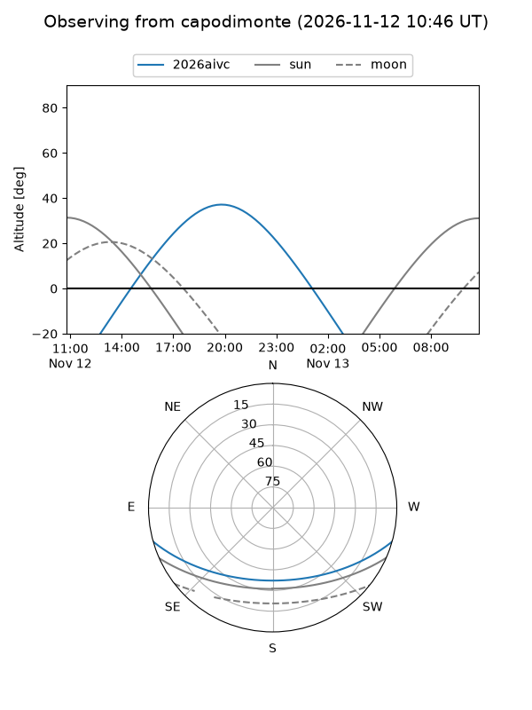
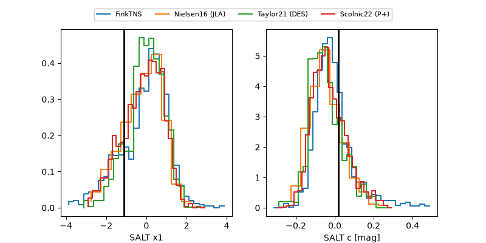

2026aivc
Target 2026aivc at 2026-11-12 09:20
Aliases and brokers:
FINK-ZTF: ztf.fink-portal.org/ZTF26acepfjn
Lasair-ZTF: lasair-ztf.lsst.ac.uk/objects/ZTF26acepfjn
ALeRCE-ZTF: alerce.online/object/ZTF26acepfjn
YSE-PZ: ziggy.ucolick.org/yse/transient_detail/2026aivc
TNS name: wis-tns.org/object/2026aivc
Direct TNS query: direct search
alt names
ZTF26acepfjn (ztf,fink_ztf)
2026aivc (tns,yse)
Coordinates:
equatorial (ra, dec) = 2.9569,-12.12721
equatorial (HMS+DMS) = 00:11:49.65,-12:07:37.94
galactic (l, b) = (89.2409,-72.35588)
Flags:
peak dt: +1.3
Photometry:
last ztfg=19.78, ztfr=19.96
3 ztfg, 2 ztfr detections
Lightcurve

Visibility



Additional plots
